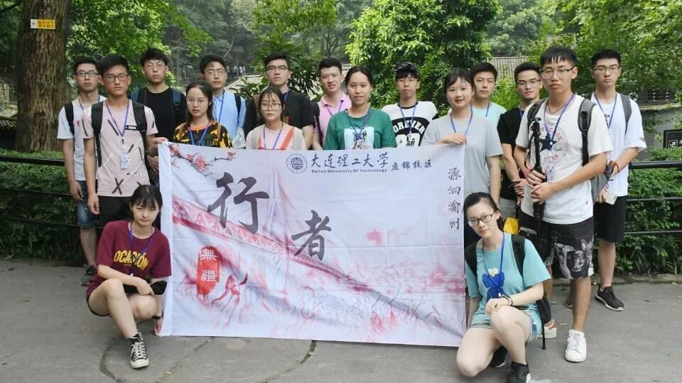
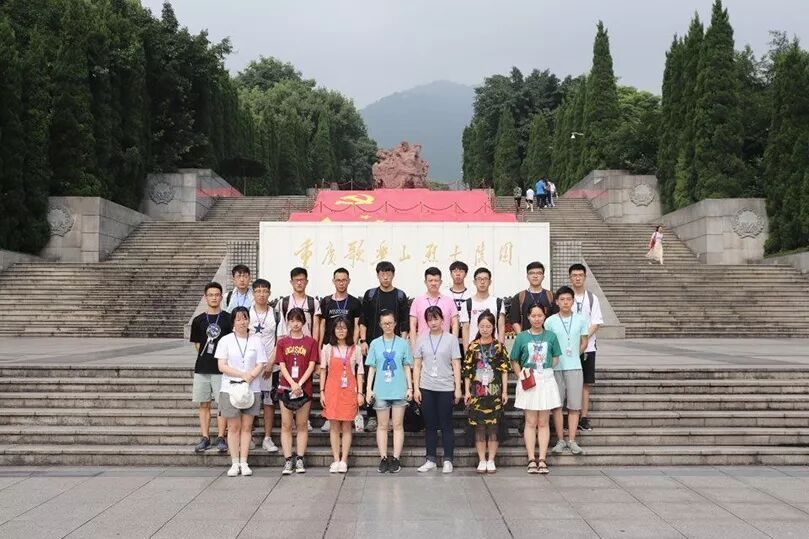

【行者无疆 源洄渝州】虎穴英华铸忠魂

行者们的路程已经进行到第三天了。
对于每个行者来说，
每一天都是不平常的一天。
重庆的巴渝和英雄文化给行者们讲述着
属于这个地区的故事。
行者的第三天有着怎样的精彩呢？
答案马上揭晓！



在经过了一小时余的奔波后，行者们抵达了今日行程的第一站——歌乐山烈士陵园及红岩魂陈列馆。
歌乐山，传说大禹“召众宾歌乐于此”，此山也因此而得名。烈士陵园位于歌乐山麓，原为民国时军统阅兵场所在地。民国时期，这座歌乐山是针对共产党人和其他民主进步人士设立的惨无人道的监狱，因曾发生过国民党反动派发动的“一一·二七”大屠杀而震惊中外。

//////////
虎穴坚持神圣业，
几人鲜血染红星。
踏入正门，气势恢宏的红岩魂陈列馆迎面走来。从陈列馆北侧的阶梯拾级而上，鲜红的巨幅国旗、党旗、军旗、共青团旗、少先队旗依次呈现在眼前。阶梯之上则是死难烈士之墓，在墓前烈士的长明火旁边，一只花圈肃穆地伫立着——这里刚刚进行了一场对英烈的祭奠。陈列馆中陈列着的众多英烈的遗物哭诉着歌乐山这片土地的腥风血雨，而对历史的详尽描述，也让行者们百感交集。


渣滓洞，一座渣多煤少的小煤矿，在国民党特务逼死矿长并强行霸占矿洞之后将其改为了羁押革命志士的集中营。白公馆，四川军阀白驹的私宅，原本山清水秀，白墙黑瓦，小桥流水；国民党强买下后，地下贮藏室变成了地牢，防空洞变成了刑讯室，而普通的住房也变成了牢房。这两座无辜的建筑也因此成为了两口臭名昭著的活棺材。
是七尺男儿生能舍己，
作千秋雄鬼死不还家。
先烈们身陷囹圄，却依然在狱中顽强斗争。他们运用自己的坚强意志和坚实理论策反了数名狱卒看守；为悼念因缺乏治疗因病去世的难友与特务斗智斗勇来举办追悼会；大年初一，他们和数名策反狱卒一道举办了狱中春节大联欢；他们在江竹筠“江姐”的带领下树立了“坚持学习，锻炼身体，迎接解放”的狱中意志，与国民党反动派抗争到底。在生命的最后一刻，没有惊慌，没有哭泣，他们想到的仍然是党的事业与祖国的富强；他们血与泪的嘱托，凝结成了《狱中八条意见》；字字句句，展现的是一颗颗晶莹的红心……
1949年11月27日，重庆解放前夕，丧心病狂的国民党军统特务在狱外架起机枪，点燃大火，对正在期待黎明到来的革命者进行了疯狂的大屠杀。革命先烈日夜期盼的新中国成立了，他们却恨饮枪弹，倒在了黎明之前。
红岩英烈，已被残酷的历史升格成民族的史诗：屠刀下，他们视死如归，坚强不屈；临刑时，他们大义凛然，从容就义。这里，诞生了《红岩》这一可歌可泣的英雄史诗。
感先人之忠烈，
立今人之壮举。

瞧呀，这是我们的旗帜！
鲜明的旗帜，猩红的旗帜，
我们用血换来的旗帜！
美丽吗？看我挥舞它吧！
不要性急呀，把它藏起来呀！
等解放大军来了那天，
从敌人的集中营里，
我们举起大红旗，
洒着自由的眼泪，
一齐出去！
——《我们也有一面五星红旗》
歌乐山，你在空间范畴上或许不足挂齿，但在时间意义上，人民共和国历史上却永远无法绕开。你是一座由烈士鲜血凝固而成的山，一座人们汲取内在精神力量的山！每个走进你的人都会感受到你分量，每个接近你的人都会为你所震撼。歌乐山，你属于历史，属于人民共和国的历史！


THE END
你身上的土地已经流淌过太多的鲜血，也见证过太多的民族义节。时钟指向了一个崭新的时代，人民脸上的欢笑乃是对英烈们最好的慰藉。
看吧，这盛世中华，如你所愿！

来源丨行者无疆实践团
文字丨段智然
排版丨康艳虎
审核丨邓子孚 段智然
行者无疆实践团
QQ：2758025831

随行者一起认识世界
长按二维码关注